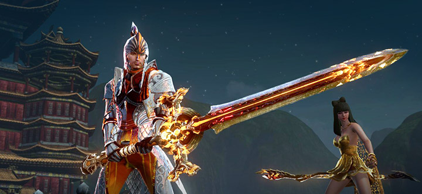

ArcheAge puts the power of creation into the players hands. Every player can choose the life and legacy they build in this world. You can choose the simple life of a farmer, a fisherman, or a craftsman. Perhaps you want to be a merchant but not one of noble or pure intentions? Pirate other players on the open seas and fight the fierce monsters of the deep like the Kraken and the leviathan make your name feared as you send others to visit Davy Jones. If the simple life is not for you fighting might be more your pace, carving your way to the top of the gladiator arenas ranking, or fight in feirce battles with your fellow guildmates and countrymen to secure the bloody planes of Halcyona. Maybe you dream of grander things and want to lead your friends to conquering Auroria, building a castle and carving you guilds name onto the map. If you suceed you may even be able to declare your independance and form a nation all your own and defend it from other guilds and nations. In ArcheAge your story is yours to write.

Set in a fantasy world of magic and adventure and completely open with free travel between all zones, with a few dungeons, and openly contestable world bosses. Players are also able to own their own housing in designated areas of each zone and trade and sell things on a player driven auction system. The waters between continents are where the fun began, trade routes between factions lead to some really fun and unique battles on player owned and driven merchant and battleships. Alongside all these areas and events ArcheAge has one of the most unique class systems in the world of mmorpg’s; every character can change to any class at any time by selecting three skill trees of the ten in game totaling over one hundred and twenty different classes.
Crafting in ArcheAge created another avenue of character customization, even though it was heavily based on random chance, it offers different stat combinations and armor types for multiple styles of play. Later introduced was a crafting system that was cheaper and linear so it was more for the meta classes. Weapons and armor are both crafted from materials farmed on player land and with resources gained through international trading, the second crafting system or the obsidian system also require materials from the bosses and mobs that spawned in around the world.